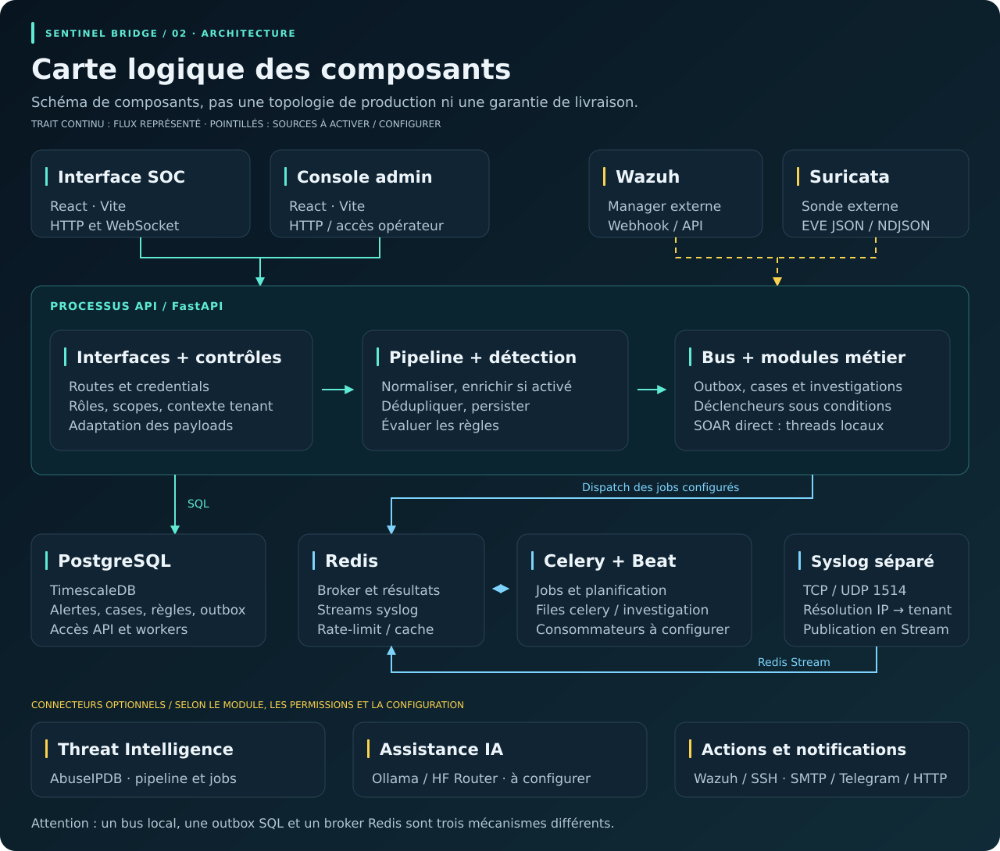

Centraliser
Rapprocher les formats de logs, normaliser la gravité et évaluer des règles communes.
Des
signaux plus comparables
EXPLORATEUR DU PROJET
La nature du projet, ses acteurs et le lien entre ses briques.
Sentinel Bridge réunit la collecte, l’analyse et des réponses sous conditions dans une base de laboratoire modulaire.
Explorer les 8 étapesRapprocher les formats de logs, normaliser la gravité et évaluer des règles communes.
Rassembler les preuves et le contexte multi-sources dans des dossiers partageables.
Déclencher des playbooks ou des réponses selon les politiques, droits et approbations.
Trier, investiguer et suivre l’issue des dossiers selon ses droits.
Configurer les sources, les accès et les politiques de réponse.
Tester les parcours et étendre les adaptateurs et connecteurs.
Sélectionnez un composant pour lire son rôle, ses échanges et ses limites.

Structure inspirée de la Clean Architecture, avec des modules legacy et des modèles SQLAlchemy.
app/interface/
Routes HTTP, middleware, contrats et contrôle d’accès.
app/application/
Pipeline, règles, cases, investigations et orchestration.
app/domain/
Modèles métier : alertes, dossiers, recommandations et exécutions.
app/infrastructure/
Connecteurs, transports, jobs et exports. Configuration
commune dans app/core/.
Cliquez sur une étape pour suivre ses entrées, son traitement et ses sorties.
Un fil de lecture, pas une exécution obligatoire. Les doublons s’arrêtent ; un match peut ouvrir les branches investigation et SOAR indépendamment. La clôture reste une décision explicite.
Navigation clavier : flèches, Début et Fin sur les étapes. Aucun événement ni job n’est exécuté.
Des bénéfices qualitatifs, liés au code. Pas de ROI, SLA ou réduction de délais inventés.
Plusieurs sources, plusieurs formats.
À confirmer sur les données et seuils de tous les modules.
Le même signal apparaît plusieurs fois.
Tracker local au processus, non distribué et non durable.
Des preuves difficiles à rapprocher.
Sa qualité dépend de la complétude des collecteurs.
Commande, envoi et effet sont confondus.
Politique, traces de run et retours des connecteurs.
Lire l’étape 07Ni interruption d’action ni rollback universel à promettre.
Des intégrations difficiles à maintenir.
Responsabilités et adaptateurs identifiables.
Lire l’architectureLes nouveaux parcours restent à tester de bout en bout.